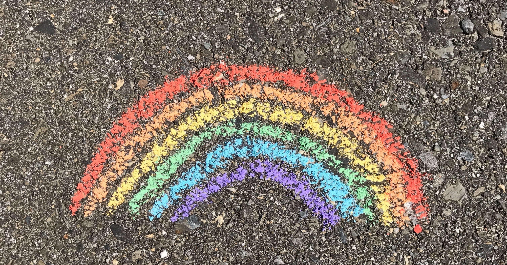
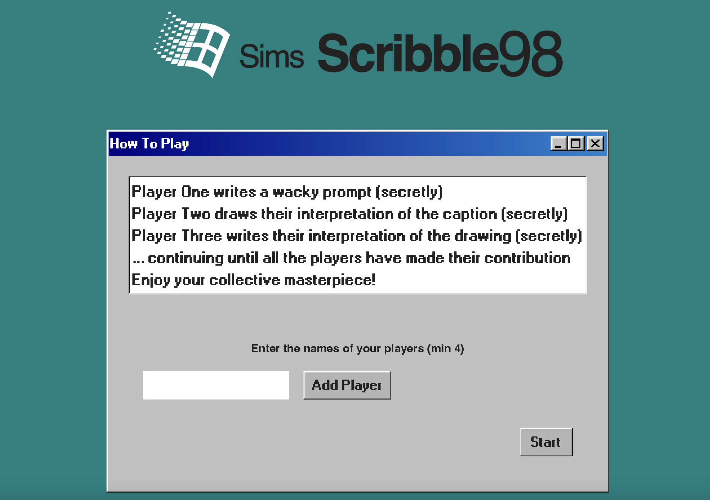
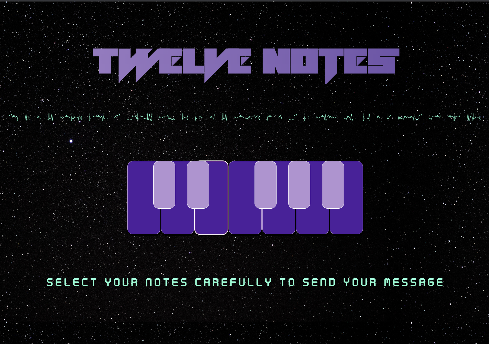

About
Kia ora, I’m Sparrow! I’m a software developer and musician with a passion for The Future, innovation, community, curiosity, queerness, and reality tv 🚀 💫 📺
I strive to contribute in meaningful ways towards building a more sustainable and equitable future for our planet and those who live here
Technology will ultimately shape our future more than anything else and my recent work at Dev Academy has helped me realise the potential to turn my passion for coding and writing games and apps into a meaningful career focused in progress, adaptability, and creativity.
This is a collection of some of my recent works made using JavaScript, React, Redux, HTML, Tailwind CSS, SQL, Python and Pygame.
View my CV here


A drawing and guessing game based on the party game Gartic Phone. Caption a drawing or draw based on a caption, and watch your interpretations morph as the message is passed through each player.
This is a project I worked on with three other developers using Typescript, React and Tailwind CSS, as well as a Windows 98 inspired style sheet..
I loved working collaboratively as the Front End Lead on this project, and applying a variety of different skills and tech to make the logic of the game work in tandem with the front end presentation..
We are looking into using WebSocket in the future to make the game playable on multiple devices with many players at once.

An app that allows you to communicate with extra terrestrials through music using your keyboard, made with React.js.
I largely connect to others through music and a lot of other extra terrestrials do too.
With Twelve Notes, you can play sounds using your computer keyboard. It will ultimately be a place to learn about how different chord qualities convey different emotions, and where we can use these chords to have conversations with whoever is out there in the great unknown.